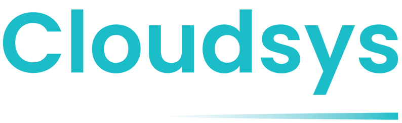

Learn the operation
Understand the people, process, information, and constraints before proposing a change.

Talk to an expert ↗These anonymized examples show the kind of operational challenges CloudSys addresses. They are based on the existing stories presented by CloudSys and avoid identifying customer details.
STORY 01
A previous partner left critical functionality unfinished, creating an environment where the implementation could not deliver the expected operational value.
CloudSys learned the business from the ground up, examined the workflows behind the system, and redesigned the work around what users and leaders actually needed.
The engagement moved toward better NetSuite value, ongoing optimization, and support through renewal decisions.
STORY 02
A substantial NetSuite implementation had stalled before the organization achieved the intended outcome.
Developers worked directly with users, studied the operation in detail, and redesigned the experience around the way work happened.
The work focused on simplifying workflows, reducing manual effort, and moving the implementation closer to completion.
THE REPEATING PATTERN
Understand the people, process, information, and constraints before proposing a change.
Keep technical decision-makers in direct contact with the users doing the work.
Support the system as real use reveals the next valuable opportunity.
YOUR SITUATION WILL BE DIFFERENT